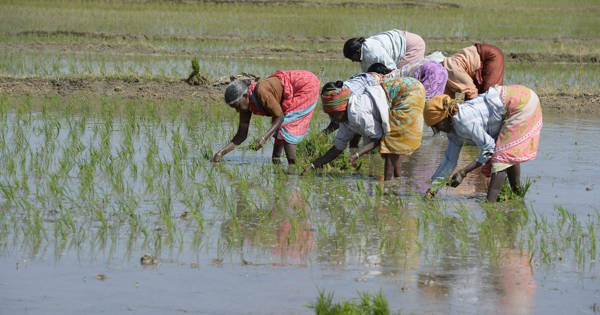
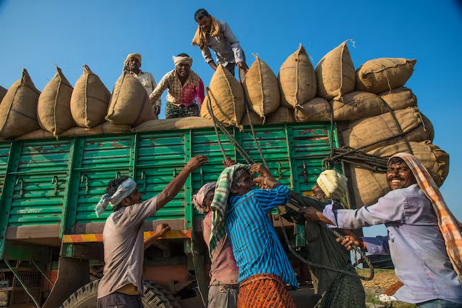

Save FARMERS, Save
- AGRICULTURE..!
- ECONOMY..!
- AGRICULTURE..!
- COUNTRY..!
As we are celebrating our country's 75th independence day, we should
not forget that india is still primarily AGRICULTURAL country
and
agricuture is the backbone of our country.And what if that
backbone is
broken .Every year thousands speak about farmers
suicide and yet no
proper measures are taken to prevent it. This website my sincere
effort
to address those preventive measures..
What is the importance of Agricuture..?
Agriculture plays a vital role in the Indian economy. Over 70 per cent of the rural households depend on agriculture. Agriculture is an important sector of Indian economy as it contributes about 17% to the total GDP and provides employment to around 58% of the population. Indian agriculture has registered impressive growth over last few decades. The foodgrains production has increased from 51 million tonnes (MT) in 1950-51 to 250MT during 2011-12 highest ever since independence.
Agricultural influence on national income:
- The contribution of agriculture during the first two decades towards the gross domestic product ranged between 48 and 60%. In the year 2001-2002, this contribution declined to only about 26%.
Agriculture plays vital role in generating employment:
- In India at least two-thirds of the working population earn their living through agricultural works. In India other sectors have failed generate much of employment opportunity the growing working populations.
Agriculture makes provision for food for the ever increasing population:
- Due to the excessive pressure of population labour surplus economies like India and rapid increase in the demand for food, food production increases at a fast rate. The existing levels of food consumption in these countries are very low and with a little increase in the capita income, the demand for food rise steeply (in other words it can be stated that the income elasticity of demand for food is very high in developing countries).
- Therefore, unless agriculture is able to continuously increase it marketed surplus of food grains, a crisis is like to emerge. Many developing countries are passing through this phase and in a bid to make the increasing food requirements agriculture has been developed.
Contribution to capital formation:
- There is general agreement on the necessity capital formation. Since agriculture happens be the largest industry in developing country like India, it can and must play an important role in pushing up the rate of capital formation. If it fails to do so, the whole process economic development will suffer a setback.
Supply of raw material to agro-based industries:
- Agriculture supplies raw materials to various agro-based industries like sugar, jute, cotton textile and Vanaspati industries. Food processing industries are similarly dependent on agriculture. Therefore, the development of these industries entirely is dependent on agriculture.
Market for industrial products:
- Increase in rural purchasing power is very necessary for industrial development as two- thirds of Indian population live in villages. After green revolution the purchasing power of the large farmers increased due to their enhanced income and negligible tax burden.
Influence on internal and external trade and commerce:
- Indian agriculture plays a vital role in internal and external trade of the country. Internal trade in food-grains and other agricultural products helps in the expansion of service sector.
Contribution in government budget:
- Right from the First Five Year Plan agriculture is considered as the prime revenue collecting sector for the both central and state budgets. However, the governments earn huge revenue from agriculture and its allied activities like cattle rearing, animal husbandry, poultry farming, fishing etc. Indian railway along with the state transport system also earn a handsome revenue as freight charges for agricultural products, both-semi finished and finished ones.
Need of labour force:
- A large number of skilled and unskilled labourers are required for the construction works and in other fields. This labour is supplied by Indian agriculture.
Greater competitive advantages:
- Indian agriculture has a cost advantage in several agricultural commodities in the export sector because of low labour costs and self- sufficiency in input supply.
Significance of farmers in economy...
Now I am going to discuss the importance of farmer in the future generations. According to world's survey our India is one of the top countries in cultivation and farming. But now -a -days Indian farmers stayed a neglected community for decades despite their huge contribution in economy of the Nation. Indian farmers are the backbones of our nation's economy as Indian economy is primarily Agriculture based country. Statics reveal that Indian agriculture is sector accounting for 18% of india's Gross Demostic Product(GDP) and provide employment to nearly 50% of workers. Unfortunately despite being the main people in such industry ,Indian farmers are constantly subjected Harassment, Unemployment or lower payment of crops and such other things subjecting them into incur losses and face Poverty. India is the largest producer of wheat,rice,pulses and spices and has more scope for groth in agricultural sector. If farmers get an assured minimum support prices for their produces and also if the functioning in trade is made digital or online,or by eliminating middle person who is exchanging goods from farmers to factories or from factories to farmers. Then the financial state of farmers will be improved in agricultural fields is witnessed in some places, due to new laws and polices provided an important issues to discuss in schools on other social and political platforms.
Indian farmers are second to none in production and productivity despite of the fact that millions are marginal and small farmers. They adopt improved agriculture technology as efficiently as farmers in developed countries. It is felt that with provision of timely and adequate inputs such as fertilizers, seeds, pesticides and by making available affordable agricultural credit /crop insurance, Indian farmers are going to ensure food and nutritional security to the Nation.
Various reasons such as monsoon failure, climate change, high-debt burdens, Government policies, mental health, climate changes, interstate water disputes, water crisis, lack of awareness, lack of direct integration with market, distressed due to loans, Costs of Agricultural equipment, cost of chemicals and seeds, personal issues and family problems are among the reasons for farmers suicides in India The list includes farmers-cultivators and agricultural labourers. Seven states account for 87.5 per cent of total suicides in the farming sector in the country including Maharashtra, Karnataka, Telangana, Madhya Pradesh, Chhattisgarh, Andhra Pradesh and Tamil Nadu. Maharashtra is the worst affected state. Ironically, Punjab, which benefited most from the Green Revolution, also presents a depressing picture of farmers suicides in India. Between 1995-2015, 4,687 farmers suicides have been reported from Punjab of which 1334 from one Mansa district alone.